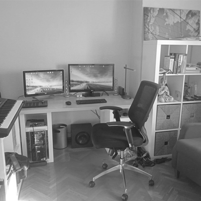
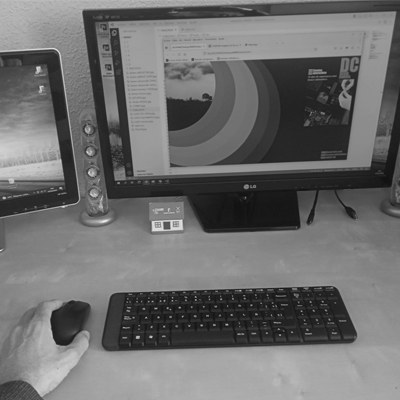

DC
David
Corral
Desarrollo WEB
Año y medio de experiencia como diseñador web.
-Certificación freeCodeCamp en Diseño Web adaptativo.
-Certiricación freeCodeCamp en Algoritmos de JavaScript y Estructuras de Datos
-MASTER en diseño web con CEDECO.
Técnico Informático
18 años de experiencia como técnico informático:para la pequeña y mediana empresa.
Redes LAN y WIFI, seguridad, impresoras gran formato, tecnologías cliente-servidor, virtualización, reparación de PC y MAC, portátiles y sobremesas, tablets y móviles, copias de seg CLOUD etc etc.
ABOUT ME
I LOVE TECNOLOGY AND DESIGN y la montaña^^^